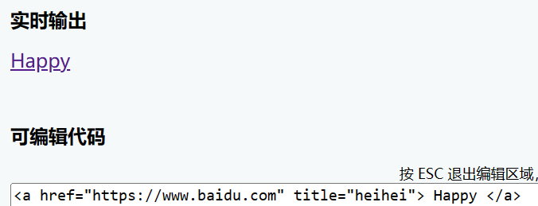
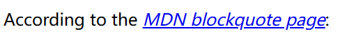

01 HTML 介绍
- HTML 的作用
- HTML 的基本概念和语法
1 HTML 基础
1.1 什么是 HTML
- HTML 是告知浏览器如何组织页面的标记语言
- HTML 标签不区分大小写，一般使用全小写
1.2 元素 Element
- 一般元素包括开始标签、结束标签和内容
1.2.1 嵌套元素
- 注意需要保证所有元素的正确打开和关闭
1.2.2 块级元素和内联元素
- 块级元素
- 在页面中以块的形式展现（出现在新的一行，将后面的内容挤到下一行）
- 展示页面上结构化的内容，==例如段落、列表、导航菜单、页脚==等等
- 一个以 block 形式展现的块级元素不会被嵌套进内联元素中，但可以嵌套在其它块级元素中。
- 内联元素
- 通常出现在块级元素中并环绕文档内容的一小部分
- 不会导致文本换行
- 例如超链接元素
a或强调元素em和strong
1.2.3 空元素
- 空元素：只有一个标签，通常表示在此插入/嵌入一些东西
- 比如：
<img>表示在这个位置插入一张图片
1.3 属性
- 属性包含元素的额外信息，这些信息不会出现在实际的内容中
- 一个属性必须包含如下内容：
- 一个空格，在属性和元素名称之间（如果已经有一个或多个属性，就与前一个属性之间有一个空格）。
- 属性名称，后面跟着一个等于号。
- 一个属性值，由一对引号 ("") 引起来。
1.3.1 举例：<a> 的属性
href：声明超链接的 web 地址（点击后的去向）title：超链接声明额外的信息（鼠标悬停时的提示信息，以工具提示的形式显示）target：指定链接如何呈现出来target="_blank"将在新标签页中打开链接，当前标签页打开可以忽略这个属性

1.3.2 布尔属性
- 布尔属性：只能有跟它的属性名一样的属性值
- 例如
disabled属性，标记表单输入使之变为不可用<input type="text" disabled="disabled"><input type="text" disabled>
1.4 HTML 文档
1.4.1 HTML 文档分析
1 | |
<!DOCTYPE html>：声明文档类型<html></html>：包裹了整个完整的页面，是一个根元素<head></head>：一个容器，它包含了所有你想包含在 HTML 页面中但不想在 HTML 页面中显示的内容- 包括你想在搜索结果中出现的关键字和页面描述，CSS 样式，字符集声明等等
<meta charset="utf-8">：设置文档使用 utf-8 字符集编码<title></title>：页面标题，出现在浏览器标签、标记和收藏页面时<meta name="viewport" content="width=device-width, initial-scale=1.0">使页面在各种设备上看起来一致<body></body>：包含所有显示在页面上的内容<main>标签规定文档的主要内容。<main>元素中的内容对于文档来说应当是 唯一 的。它不应包含在文档中重复出现的内容，比如侧栏、导航栏、版权信息、站点标志或搜索表单。
1.4.2 HTML 中的空格
- 无论你在 HTML 元素的内容中使用多少空格 (包括空白字符，包括换行)，当渲染这些代码的时候，HTML 解释器会将连续出现的空白字符减少为一个单独的空格符。
1.5 实体引用和注释
1.5.1 实体引用：在 HTML 中包含特殊字符
在 HTML 中，字符
<、>、"、'和&是特殊字符使用字符引用 —— 表示字符的特殊编码
每个字符引用以符号
&开始，以分号;结束原义字符 等价字符引用 < <> >" "' '& &
1.5.2 注释
<!-- 注释内容 -->
2 <head> 标签
<head>标签里的内容，是不会在页面中显示的，作用是保存页面的元数据- 页面的
<title>，不会显示 - 指向 CSS 的链接（如果你选择用 CSS 来为 HTML 内容添加样式）
- 指向自定义图标的链接和其它的元数据（描述 HTML 的数据，比如，作者和描述文档的重要关键词）等信息
2.1 添加标题 <title>
<title>和<h1>的区别<title>是 HTML 文档的标题，是整个网页的标题，是元数据<h1>是 Body 中的标题，标记页面中某些内容的标题
- 如果尝试为某个页面添加书签，
<title>的内容会是被建议的书签名 <title>元素的内容也被用在搜索的结果中
2.2 元数据 <meta> 元素
- 元数据：描述数据的数据
- ⚠ 注意：
<meta>是自闭合的
2.2.1 指定文档中字符的编码
<meta charset="utf-8">
2.2.2 添加作者和描述
- 许多
<meta>元素包含了name和content属性name指定了 meta 元素的类型；说明该元素包含了什么类型的信息。content指定了实际的元数据内容。1
2<meta name="author" content="Chris Mills">
<meta name="description" content="The MDN Web Docs Learning Area aims to provide complete beginners to the Web with all they need to know to get started with developing web sites and applications.">
description的使用description可以让页面在搜索引擎的相关的搜索出现得更多（搜索引擎优化 SEO）<meta name="description" content="blablabla">
- 许多
<meta>特性已经不再使用。例如，keyword<meta>元素
2.2.3 viewport
- 使页面样式在移动端看起来与在桌面或笔记本电脑上相似
1
<meta name="viewport" content="width=device-width, initial-scale=1.0" />
2.3 给网站增加自定义图标
- 在元数据中添加对自定义图标（favicon，为“favorites icon”的缩写）的引用
<link rel="icon" href="...">- 如果你的网站使用了内容安全策略（Content Security Policy，CSP）来增加安全性，这个策略会应用在图标上
2.4 在 HTML 中应用 CSS 和 JavaScript
用 CSS 让网页更美，用 JavaScript 让网页有交互功能
<link>元素- 经常位于文档的头部
- 这个 link 元素有 2 个属性
rel="stylesheet"表明这是文档的样式表，而href包含了样式表文件的路径：
1
<link rel="stylesheet" href="my-css-file.css"><script>元素- 不一定要放在文档的
<head>中 <script>需要结束标签- 包含
src属性，指向需要加载的 JavaScript 文件路径 - 最好加上
defer，告诉浏览器在解析完成 HTML 后再加载 JavaScript- 可以确保在加载脚本之前浏览器已经解析了所有的 HTML 内容（如果脚本尝试访问某个不存在的元素，浏览器会报错
1
<script src="my-js-file.js" defer></script>- 不一定要放在文档的
2.5 为文档设置主语言
- 在
<html>开始的标签中添加lang属性1
<html lang="zh-CN"></html> - 如果设置了语言，HTML 文档就可以被搜索引擎更有效索引
- 文档也可以分段设置语言
1
<p>Japanese example: <span lang="ja">ご飯が熱い。</span>.</p>
3 HTML 文本基础
- 如何用标记 (段落、标题、列表、强调、引用) 来建立基础文本页面的文本结构和文本内容
3.1 标题和段落
- 在 HTML 中，每个段落是通过
<p>元素标签进行定义的 - 每个标题（Heading）是通过“标题标签”进行定义的
- 注意点
- 每个页面最好只有一个
<h1> - 注意标题层次结构
- 每个页面最好只有一个
- 语义
<h1>元素是一个语义元素，它的语义值会被使用，比如通过搜索引擎和屏幕阅读器<span>元素没有语义
3.2 列表
3.2.1 无序列表 Unordered List
- 无序列表由
<ul></ul>包括 - 用
<li></li>元素包裹每一个单独 item
3.2.2 有序列表 Orderer List
- 结构和无序列表一致，用
<ol></ol>包裹所有 items
3.2.3 嵌套列表 Nesting Lists
3.3 重点强调
3.3.1 强调
<em></em>- 注意：斜体不是
<em>的作用，是浏览器对 “强调” 的默认风格 - 真正的斜体应该用
<span>元素和 CSS，或<i>元素
3.3.2 重点
<strong></strong>- 注意：加粗不是
<strong>的作用，是浏览器对 “重要” 的默认风格 - 为了获得粗体风格，应该使用
<span>元素和一些 CSS，或者是<b>元素
3.3.3 斜体字、粗体字和下划线
<b>、<i>和<u>仅仅影响表象，没有语义，被称为表象元素 (presentational elements)<i>被用来传达传统上用斜体表达的意义：外国文字，分类名称，技术术语，一种思想……<b>被用来传达传统上用粗体表达的意义：关键字，产品名称，引导句……<u>被用来传达传统上用下划线表达的意义：专有名词，拼写错误……
4 超链接
4.1 创建一个链接
- 将某个元素包裹在
<a>内，并给出一个href属性，就可以创建一个基本链接 href属性也称为超文本引用或目标，指向一个网址title属性：包含链接的补充信息，当鼠标指针悬停时，标题将作为提示信息出现
4.2 统一资源定位符 (URL) 与路径 (path)
- 统一资源定位符（英文：Uniform Resource Locator，简写：URL）是一个定义了在网络上的位置的一个文本字符串
- URL 使用 路径 查找文件
href的指向- 指向其他文件
- 指向当前目录文件
1
<p>要联系某位工作人员，请访问我们的<a href="contacts.html">联系人页面</a>。</p> - 指向子目录文件
1
<p>请访问<a href="projects/index.html">项目页面</a>。</p> - 指向上级目录，再访问其他目录文件
../1
<p>点击打开<a href="../pdfs/project-brief.pdf">项目简介</a>。</p>
- 指向当前目录文件
- 指向文档片段（连接到 HTML 文档的特定部分）
- 给要被链接的元素分配
id属性1
<h2 id="Mailing_address">邮寄地址</h2> - 在
href指向 URL 的结尾使用#指向该id1
<p>要提供意见和建议，请将信件邮寄至<a href="contacts.html#Mailing_address">我们的地址</a>。</p>
- 给要被链接的元素分配
- 指向其他文件
4.3 链接注意事项
- 使用清晰的链接措辞
- 如果链接到非 HTML 资源，要留下清晰指示
- 在下载链接时使用 download 属性
1
<a href="..." download="xxx.exe">下载xxx安装包</a>
4.4 电子邮件链接
- 点击一个链接或按钮时，打开一个新的电子邮件发送信息
- 方法：使用
<a>元素和mailto:URL1
<a href="mailto:nowhere@mozilla.org">向 nowhere 发邮件</a> mailto:URL可以加入其他信息，其中最常用的是主题（subject）、抄送（cc）和主体（body）- 用问号
?分隔主 URL 和参数值 - 使用
&符来分隔mailto:URL中的各个参数1
<a href="mailto:nowhere@mozilla.org?cc=name2@rapidtables.com&bcc=name3@rapidtables.com&subject=The%20subject%20of%20the%20email&body=The%20body%20of%20the%20email">Send mail with cc, bcc, subject and body</a>
- 用问号
5 高级文字排版
5.1 描述列表 description list
- 作用：标记一组项目及其相关描述，例如术语和定义
- 使用方法
- 闭合标签——
<dl> - 每个项目：
<dt>description term - 每个描述：
<dd>description definition
- 闭合标签——
- 浏览器的默认样式会在描述列表的描述部分（description definition）和描述术语（description terms）之间产生缩进
- ⚠ 注意：一个术语
<dt>可以同时有 多个 描述<dd>
5.2 引用
块引用
- 如果一个块级内容（一个段落、多个段落、一个列表等）从其他地方被引用，应该把它用
<blockquote>元素包裹起来表示 - 在
cite属性里用 URL 来指向引用的资源 - 浏览器在渲染块引用时默认会增加缩进，作为引用的一个指示符
1
<blockquote cite="某某地址">blablabla</blockquote>
行内引用
- 用
<q>元素标记引用 - 浏览器默认将其作为普通文本放入引号内表示引用
1
blablabla<q cite="某某地址">引用内容</q>
引文
cite属性内容 不会 被浏览器显示、屏幕阅读器阅读，需使用 JavaScript 或 CSS，浏览器才会显示cite的内容- 如果你想要确保引用的来源在页面上是可显示的，更好的方法是为
<cite>元素附上链接 - 引文默认的字体样式为 斜体
1
2
3
4<p>
According to the <a href="https://developer.mozilla.org/en-US/docs/Web/HTML/Element/blockquote">
<cite>MDN blockquote page</cite></a>:
</p>
5.3 缩略语 <abbr>
- 包裹一个缩略语或缩写，并且提供缩写的解释（包含在
title属性中） - 当鼠标悬停在缩略语上时，
title属性内容会显示1
<p>我们使用 <abbr title="超文本标记语言">HTML</abbr> 来组织网页文档</p>
5.4 标记联系方式
<address>
- 标记编写 HTML 文档的人的联系方式
1
2
3<address>
<p>Chris Mills, Manchester, The Grim North, UK</p>
</address>
5.5 上标和下标
- 上标
<sup></sup> - 下标
<sub></sub>
5.6 展示计算机代码
<code></code>用于标记计算机代码<pre></pre>用于保留空白字符- 💡理解：在 HTML 中，使用缩进和多于一个的空格都将被忽略，将文本包含在
<pre></pre>中，可以保留文本的空白字符，使其与在编辑器中的显示方式相同
- 💡理解：在 HTML 中，使用缩进和多于一个的空格都将被忽略，将文本包含在
<var></var>标记具体变量名<kbd></kbd>标记键盘输入，比如ctrl<samp></samp>标记计算机程序输出
5.7 标记时间和日期
<time>
1 | |
6 文档和网站架构
- HTML 不仅能够定义网页的单独部分（例如“段落”或“图片”），还可以使用块级元素（例如“标题栏”、“导航菜单”、“主内容列”）来定义网站中的 复合区域
6.1 文档的基本组成部分
- 页眉
<header>- 横跨于整个页面顶部有一个大标题 和/或 一个标志
- 导航栏
<nav>- 通常用菜单按钮、链接或标签页表示
- 通常应在所有网页之间保持一致
- 页眉和导航栏分开可以更好地提供无障碍访问特性
- 主内容
<main>- 主内容中还可以有各种子内容区段
<article><section><div>
- 侧边栏
<aside>- 一些外围信息、链接、引用、广告等
- 通常与主内容相关，可以嵌套在
<main>中 - 辅助导航系统
- 页脚
<footer>- 放置公共信息
- 一般使用较小字体，且通常为次要内容
6.2 HTML 布局元素细节
<main>存放每个页面独有的内容。每个页面上只能用一次<main>，且直接位于<body>中。最好不要把它嵌套进其它元素<article>包围的内容即一篇文章，与页面其它部分无关（比如一篇博文）<section>更适用于组织页面使其按功能（比如迷你地图、一组文章标题和摘要）分块<aside>包含一些间接信息（术语条目、作者简介、相关链接，等等）<header>是简介形式的内容- 如果它是
<body>的子元素，那么就是网站的全局页眉 - 如果它是
<article>或<section>的子元素，那么它是这些部分特有的页眉
- 如果它是
<nav>包含页面主导航功能。其中不应包含二级链接等内容<footer>包含了页面的页脚部分
无语义元素
<span>是一个内联的（inline）无语义元素，最好只用于无法找到更好的语义元素来包含内容时，或者不想增加特定的含义时<div>是一个块级无语义元素，应仅用于找不到更好的块级元素时，或者不想增加特定的意义时
换行和水平分割线
- 换行
<br>可在段落中进行换行<br>是 唯一 能够生成多个短行结构（例如邮寄地址或诗歌）的元素
- 分割线
<hr>元素在文档中生成一条水平分割线，表示文本中主题的变化（例如话题或场景的改变）- 一般就是一条水平的直线
7 HTML 调试
- Markup Validation Service
- 由 W3C（制定 HTML、CSS 和其他网络技术标准的组织）创立并维护的标记验证服务。
- 把一个 HTML 文档加载至本网页并运行，网页会返回一个错误报告。
01 HTML 介绍
http://example.com/2023/01/18/HTML/01 HTML 介绍/